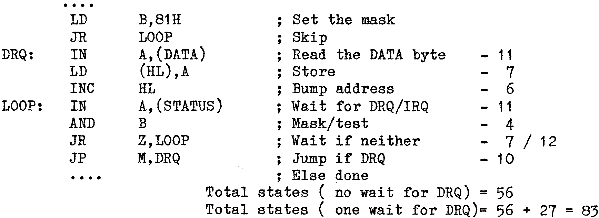

80-Bus News |
July–October 1982 · Volume 1 · Issue 3 |
| Page 41 of 51 |
|---|
further test to find out which bit was set as the AND instruction will have also set the sign bit in the flag register to indicate the state of bit 7. Thus if it is Positive (i.e. bit 7 was 0), then bit 0 must have been set to create the NZ result of the AND.
Turning now to the execution timing of the code: It can be seen that even the fastest loop is outside the time limit that has to met, so the code – simple as it is – needs revising to make the loop tighter. Setting the mask byte of 81H in a register and performing the AND with that register will save 3 T states, and making the last JR a JP will save a further 2, but that only reduces the loop to 68 T states, still 4 over the target. The “Exit on IRQ” JP in the middle of the code is a bit of a time waster as it only serves to terminate the loop and contributes nothing to the data transfer itself, and so could be moved with some benefit.
With some re-organisation the code could now look like this:
The re-organisation has effectively removed one JP from the critical loop (at the expense of an extra JR at the start to get into the loop), and has improved the timing figures as a result. Going straight through is now well under the 64 T-state limit, but the extra 27 T-states that occur when there is a wait for the DRQ are slightly worrying. A more detailed cosideration is required to see if they matter.
Assume that a DRQ has appeared towards the end of the execution of the IN instruction that is checking the status port, and has just been missed. Now the number of T states that occur until the data byte is actually read is: 4+12+11+4+7+10+11 = 59 – so that byte will be read before the controller assembles the next byte (which comes after 64 T states). When the label LOOP is next reached the DRQ bit will be set (because it has taken >64 T-sates to get back there) so the next data transfer loop will be a short one (56 T states) and some time will be caught up. This will continue until the routine overshoots and has to wait again. Anyway it all seems possible.
The code for a Write transfer is similar:–
DRQ: LD A,(HL)
OUT (DATA),A
.......
So the time has come to code the routines up and to try them out. Disaster! They don’t work! Why not?
When all else fails read the data sheet. For those readers who like a challenge read no further until you’ve found the answer in the 1797 data sheet.....
| Page 41 of 51 |
|---|